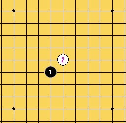
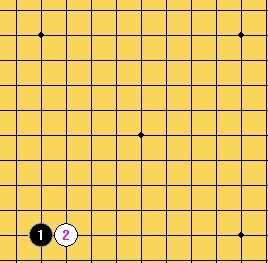
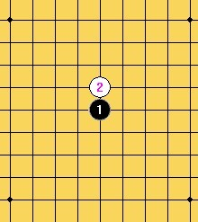
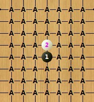
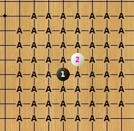
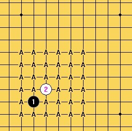

宽容规则测试（逆刃VS潇洒）1 ===逆刃胜
#1 <font color="red">宽容规则测试（逆刃VS潇洒）1 ===逆刃胜</font> 作者：逆刃 发表时间：2012-4-23 18:22:47
这个规则是由我平时自己玩的规则中演变出来的，觉得有点意思，没有要改变现行职业比赛规则的意思，只是发出来大家交流下，有希望玩的也可以一起玩玩。
宽容规则介绍：
1. A下第一手和第二手。这两子必须在四角星位范围以内，且白2须紧贴黑1（直指或斜指）。
2. B下第三手，必须在四角星位范围以内，且应与黑1，白2任一子距离3格或3格以内。
3. A下第四手，无任何限制。
4. B有权作出两种选择：
4-1. 自己下第5手，无任何限制。
4-2. 交给A下第5手，同样无任何限制。
5. 无论是A还是B下第5手，对手方均有权选择执黑或执白。
6. 以下按标准禁手规则行棋。
以上规则相应解释：
1：
2：
  
大概说一下，这个规则包括了目前的rif，山口，也包括了边角，其实第4第5手是有相应限制的，因为双方都需要保证在第5手后平衡。
另：
1：棋盘可以用围棋19路盘；
2: 5手后亦可双方无禁手行棋。
［此帖子已被 逆刃 在 2012-4-23 18:25:19 编辑过］
［此帖子已被 逆刃 在 2012-4-28 12:23:52 编辑过］
［此帖子已被 逆刃 在 2012-4-28 12:24:21 编辑过］
#2 Re:宽容规则测试（逆刃VS潇洒）1 作者：逆刃 发表时间：2012-4-23 18:24:21
欢迎交流，有请！
#3 Re:宽容规则测试（逆刃VS潇洒）1 作者：潇洒 发表时间：2012-4-23 23:18:14
#4 Re:宽容规则测试（逆刃VS潇洒）1 作者：逆刃 发表时间：2012-4-23 23:56:46
#5 Re:宽容规则测试（逆刃VS潇洒）1 作者：潇洒 发表时间：2012-4-24 1:12:22
交换
#6 Re:宽容规则测试（逆刃VS潇洒）1 作者：逆刃 发表时间：2012-4-24 9:23:22
5在2又上。在外面上不了网，就不贴图了。#7 Re:宽容规则测试（逆刃VS潇洒）1 作者：潇洒 发表时间：2012-4-24 10:26:08
#8 Re:宽容规则测试（逆刃VS潇洒）1 作者：逆刃 发表时间：2012-4-24 16:52:40
#9 Re:宽容规则测试（逆刃VS潇洒）1 作者：潇洒 发表时间：2012-4-25 3:58:11
#10 Re:宽容规则测试（逆刃VS潇洒）1 作者：逆刃 发表时间：2012-4-25 9:47:07
#11 Re:宽容规则测试（逆刃VS潇洒）1 作者：潇洒 发表时间：2012-4-25 11:21:08
［ 五子飘 于 2012-4-25 11:37:05 时花20金币送鲜花一朵］
#12 Re:宽容规则测试（逆刃VS潇洒）1 作者：逆刃 发表时间：2012-4-25 14:28:01
11手10下面。#13 Re:宽容规则测试（逆刃VS潇洒）1 作者：潇洒 发表时间：2012-4-25 16:46:07
#14 Re:宽容规则测试（逆刃VS潇洒）1 作者：逆刃 发表时间：2012-4-25 17:09:39
#15 Re:宽容规则测试（逆刃VS潇洒）1 作者：潇洒 发表时间：2012-4-25 20:56:11
#16 Re:宽容规则测试（逆刃VS潇洒）1 作者：逆刃 发表时间：2012-4-25 21:48:03
#17 Re:宽容规则测试（逆刃VS潇洒）1 作者：潇洒 发表时间：2012-4-26 10:58:38
#18 Re:宽容规则测试（逆刃VS潇洒）1 作者：逆刃 发表时间：2012-4-26 13:03:21
#19 Re:宽容规则测试（逆刃VS潇洒）1 作者：潇洒 发表时间：2012-4-26 13:36:35
#20 Re:宽容规则测试（逆刃VS潇洒）1 作者：逆刃 发表时间：2012-4-26 13:41:25
#21 Re:宽容规则测试（逆刃VS潇洒）1 作者：潇洒 发表时间：2012-4-26 23:47:55
#22 Re:宽容规则测试（逆刃VS潇洒）1 作者：逆刃 发表时间：2012-4-27 9:30:54
#23 Re:宽容规则测试（逆刃VS潇洒）1 作者：潇洒 发表时间：2012-4-27 14:33:01
#24 Re:宽容规则测试（逆刃VS潇洒）1 作者：逆刃 发表时间：2012-4-27 16:18:57
#25 Re:宽容规则测试（逆刃VS潇洒）1 作者：潇洒 发表时间：2012-4-27 18:03:35
#26 Re:宽容规则测试（逆刃VS潇洒）1 作者：逆刃 发表时间：2012-4-27 18:21:07
#27 Re:宽容规则测试（逆刃VS潇洒）1 作者：潇洒 发表时间：2012-4-27 21:51:58
#28 Re:宽容规则测试（逆刃VS潇洒）1 作者：逆刃 发表时间：2012-4-27 22:10:08
#29 Re:宽容规则测试（逆刃VS潇洒）1 作者：潇洒 发表时间：2012-4-28 1:05:54
#30 Re:宽容规则测试（逆刃VS潇洒）1 作者：逆刃 发表时间：2012-4-28 9:53:52
#31 Re:宽容规则测试（逆刃VS潇洒）1 作者：潇洒 发表时间：2012-4-28 10:53:42
#32 Re:宽容规则测试（逆刃VS潇洒）1 作者：逆刃 发表时间：2012-4-28 11:32:14
#33 Re:宽容规则测试（逆刃VS潇洒）1 作者：潇洒 发表时间：2012-4-28 11:33:14
#34 Re:宽容规则测试（逆刃VS潇洒）1 作者：逆刃 发表时间：2012-4-28 11:36:26
［ 潇洒 于 2012-4-28 11:59:16 时花20金币送鲜花一朵］
［ 潇洒 于 2012-4-28 11:59:31 时花20金币送鲜花一朵］
［ 潇洒 于 2012-4-28 11:59:42 时花20金币送鲜花一朵］
#35 Re:宽容规则测试（逆刃VS潇洒）1 作者：潇洒 发表时间：2012-4-28 11:56:03
投了。。
［ 逆刃 于 2012-4-28 11:57:04 时花20金币送鲜花一朵］
#36 Re:宽容规则测试（逆刃VS潇洒）1 ===逆刃胜 作者：与郎共五 发表时间：2012-4-28 18:14:11
12走14位?#37 Re:宽容规则测试（逆刃VS潇洒）1 ===逆刃胜 作者：逆刃 发表时间：2012-4-28 21:58:42
回LS。如果12-14的话，黑棋可能的走法有：
13之后黑正好有反白棋的进攻，所以白棋需要防一手，先活三的话应该没有什么大用处。后续几手演示可能如下：
这样一来黑棋保持先手，可以通过不断做棋来进攻，取胜的可能性极大。
个人简介，仅供参考，如有错漏，烦请指点！
［ 与郎共五 于 2012-4-30 11:00:51 时花20金币送鲜花一朵］
［ 与郎共五 于 2012-4-30 11:01:24 时花20金币送鲜花一朵］